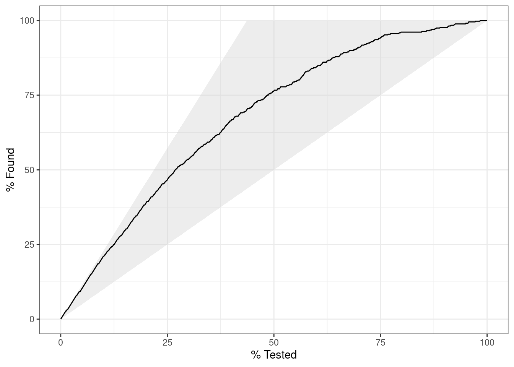

library(class) # knn
library(proxy) # dist - support cross-distance
Attaching package: 'proxy'The following objects are masked from 'package:stats':
as.dist, distThe following object is masked from 'package:base':
as.matrixlibrary(class) # knn
library(proxy) # dist - support cross-distance
Attaching package: 'proxy'The following objects are masked from 'package:stats':
as.dist, distThe following object is masked from 'package:base':
as.matrixdat1 <- read.csv("data/ch7_dat1.csv")
dat1$class <- factor(dat1$class)
train_x <- dat1[1:7, 2:3]
train_y <- dat1[1:7, 4]
test_x <- dat1[8:9, 2:3]dist(train_x) 1 2 3 4 5 6
2 4.123106
3 2.236068 5.830952
4 3.162278 5.000000 2.236068
5 2.236068 3.162278 4.472136 5.000000
6 3.605551 2.828427 5.830952 6.082763 1.414214
7 1.414214 3.605551 2.236068 2.000000 3.000000 4.123106knn.cv(train_x, train_y, k = 3)[1] 1 1 1 1 1 1 2
Levels: 1 2dist(test_x, train_x) 1 2 3 4 5 6 7
8 4.123106 5.830952 2.828427 1.000000 6.000000 7.071068 3.000000
9 3.000000 1.414214 4.472136 3.605551 2.828427 3.162278 2.236068knn(train_x, test_x, train_y, k = 3)[1] 2 1
Levels: 1 2library(e1071) # naive bayes
library(yardstick) # measure performancedat3 <- read.csv("data/ch5_dat3.csv")
dat3$gender <- factor(dat3$gender)
dat3$age_gr <- factor(dat3$age_gr)
dat3$class <- factor(dat3$class)
summary(dat3) ID gender age_gr class
Min. :1 F:5 1:1 1:5
1st Qu.:3 M:4 2:4 2:4
Median :5 3:2
Mean :5 4:2
3rd Qu.:7
Max. :9 모형 추정
nb_fit <- naiveBayes(class ~ gender + age_gr, data = dat3)
print(nb_fit)
Naive Bayes Classifier for Discrete Predictors
Call:
naiveBayes.default(x = X, y = Y, laplace = laplace)
A-priori probabilities:
Y
1 2
0.5555556 0.4444444
Conditional probabilities:
gender
Y F M
1 0.40 0.60
2 0.75 0.25
age_gr
Y 1 2 3 4
1 0.20 0.40 0.20 0.20
2 0.00 0.50 0.25 0.25사후확률
nb_posterior <- predict(nb_fit, dat3, type = "raw")
round(nb_posterior, 3) 1 2
[1,] 0.706 0.294
[2,] 0.706 0.294
[3,] 0.706 0.294
[4,] 0.706 0.294
[5,] 0.993 0.007
[6,] 0.348 0.652
[7,] 0.348 0.652
[8,] 0.348 0.652
[9,] 0.348 0.652추정범주
nb_class <- predict(nb_fit, dat3, type = "class")
nb_class[1] 1 1 1 1 1 2 2 2 2
Levels: 1 2추정결과 정리
results <- cbind(dat3, pred_class = nb_class, posterior = round(nb_posterior, 3))
results ID gender age_gr class pred_class posterior.1 posterior.2
1 1 M 2 1 1 0.706 0.294
2 2 M 2 2 1 0.706 0.294
3 3 M 3 1 1 0.706 0.294
4 4 M 4 1 1 0.706 0.294
5 5 F 1 1 1 0.993 0.007
6 6 F 2 2 2 0.348 0.652
7 7 F 2 1 2 0.348 0.652
8 8 F 3 2 2 0.348 0.652
9 9 F 4 2 2 0.348 0.652정오분류표
conf_mat(results, truth = "class", estimate = "pred_class") Truth
Prediction 1 2
1 4 1
2 1 3민감도, 특이도 및 F1 척도
multi_metric <- metric_set(accuracy, sens, spec, f_meas)
multi_metric(results, truth = "class", estimate = "pred_class")# A tibble: 4 × 3
.metric .estimator .estimate
<chr> <chr> <dbl>
1 accuracy binary 0.778
2 sens binary 0.8
3 spec binary 0.75
4 f_meas binary 0.8 library(yardstick)dat <- read.csv("data/ch5_cm.csv")
dat$pred_y <- factor(dat$pred_y, levels = c(1, 0))
dat$true_y <- factor(dat$true_y, levels = c(1, 0))
summary(dat) pred_y true_y
1:25 1:20
0:75 0:80 table(dat) true_y
pred_y 1 0
1 15 10
0 5 70cm <- conf_mat(dat, truth = "true_y", estimate = "pred_y")
cm Truth
Prediction 1 0
1 15 10
0 5 70multi_metric <- metric_set(accuracy, sens, spec, f_meas)
multi_metric(dat, truth = "true_y", estimate = "pred_y")# A tibble: 4 × 3
.metric .estimator .estimate
<chr> <chr> <dbl>
1 accuracy binary 0.85
2 sens binary 0.75
3 spec binary 0.875
4 f_meas binary 0.667summary(cm)# A tibble: 13 × 3
.metric .estimator .estimate
<chr> <chr> <dbl>
1 accuracy binary 0.85
2 kap binary 0.571
3 sens binary 0.75
4 spec binary 0.875
5 ppv binary 0.6
6 npv binary 0.933
7 mcc binary 0.577
8 j_index binary 0.625
9 bal_accuracy binary 0.812
10 detection_prevalence binary 0.25
11 precision binary 0.6
12 recall binary 0.75
13 f_meas binary 0.667library(yardstick)
library(ggplot2)dat5 <- read.csv("data/ch5_dat5.csv")
dat5$class <- factor(dat5$class, levels = c(1, 0))x >= 40범주 추정
dat5$pred40 <- factor(ifelse(dat5$x >= 40, 1, 0), levels = c(1, 0))정오분류표
cm40 <- conf_mat(dat5, truth = "class", estimate = "pred40")
cm40 Truth
Prediction 1 0
1 5 2
0 1 2민감도 및 특이도
multi_metric <- metric_set(sens, spec)
metric40 <- multi_metric(dat5, truth = "class", estimate = "pred40")
metric40# A tibble: 2 × 3
.metric .estimator .estimate
<chr> <chr> <dbl>
1 sens binary 0.833
2 spec binary 0.5 x >= 50범주 추정
dat5$pred50 <- factor(ifelse(dat5$x >= 50, 1, 0), levels = c(1, 0))정오분류표
cm50 <- conf_mat(dat5, truth = "class", estimate = "pred50")
cm50 Truth
Prediction 1 0
1 4 1
0 2 3민감도 및 특이도
metric50 <- multi_metric(dat5, truth = "class", estimate = "pred50")
metric50# A tibble: 2 × 3
.metric .estimator .estimate
<chr> <chr> <dbl>
1 sens binary 0.667
2 spec binary 0.75 library(yardstick)
library(ggplot2)dat <- read.csv("data/ch5_roc.csv")
dat$class <- factor(dat$class)
dat$pred <- factor(dat$pred)roc <- roc_curve(dat, truth = "class", posterior1)
roc# A tibble: 11 × 3
.threshold specificity sensitivity
<dbl> <dbl> <dbl>
1 -Inf 0 1
2 0.00596 0 1
3 0.0264 0.2 1
4 0.0995 0.4 1
5 0.103 0.6 1
6 0.356 0.8 1
7 0.728 0.8 0.75
8 0.921 1 0.75
9 0.980 1 0.5
10 0.981 1 0.25
11 Inf 1 0 auc <- roc_auc(dat, truth = "class", posterior1)
auc# A tibble: 1 × 3
.metric .estimator .estimate
<chr> <chr> <dbl>
1 roc_auc binary 0.95autoplot(roc) +
labs(title = paste0("ROC Curve: AUC = ", auc[[".estimate"]]))library(yardstick)
library(ggplot2)1000개 객체의 실제범주와 범주 1에 속할 사후확률 추정 결과
dat <- read.csv("data/ch5_lift_2.csv")
dat$class <- factor(dat$class)
head(dat) class posterior1
1 1 0.9995
2 1 0.9985
3 1 0.9975
4 1 0.9965
5 1 0.9955
6 1 0.9945tail(dat) class posterior1
995 2 0.0055
996 2 0.0045
997 2 0.0035
998 2 0.0025
999 2 0.0015
1000 2 0.0005summary(dat) class posterior1
1:437 Min. :0.0005
2:563 1st Qu.:0.2502
Median :0.5000
Mean :0.5000
3rd Qu.:0.7498
Max. :0.9995 사후확률 내림차순으로 객체를 100개씩 묶은 10개 집단 각각의 범주 1 빈도
grouped <- read.csv("data/ch5_lift_1.csv")
grouped$group <- factor(grouped$group)
grouped group n n1
1 1 100 92
2 2 100 78
3 3 100 64
4 4 100 57
5 5 100 43
6 6 100 35
7 7 100 29
8 8 100 22
9 9 100 7
10 10 100 10범주 1에 속한 전체 객체 수
total_n1 <- sum(grouped$n1)
print(total_n1)[1] 437전체 데이터에서 범주 1의 비율
prop_n1 <- sum(grouped$n1) / sum(grouped$n)
print(prop_n1)[1] 0.437grouped$response_pct <- grouped$n1 / grouped$n * 100
grouped$captured_response_pct <- grouped$n1 / total_n1 * 100
grouped$gain <- cumsum(grouped$captured_response_pct)
grouped$lift <- (cumsum(grouped$n1) / cumsum(grouped$n)) / prop_n1
grouped group n n1 response_pct captured_response_pct gain lift
1 1 100 92 92 21.052632 21.05263 2.105263
2 2 100 78 78 17.848970 38.90160 1.945080
3 3 100 64 64 14.645309 53.54691 1.784897
4 4 100 57 57 13.043478 66.59039 1.664760
5 5 100 43 43 9.839817 76.43021 1.528604
6 6 100 35 35 8.009153 84.43936 1.407323
7 7 100 29 29 6.636156 91.07551 1.301079
8 8 100 22 22 5.034325 96.10984 1.201373
9 9 100 7 7 1.601831 97.71167 1.085685
10 10 100 10 10 2.288330 100.00000 1.000000ggplot(grouped, aes(x = group, y = gain)) +
geom_line(group = 1) +
geom_point() +
labs(y = "% Gain", title = "Gain Chart for Class 1") +
theme_classic()ggplot(grouped, aes(x = group, y = lift)) +
geom_hline(yintercept = 1, color = "grey30", linetype = "dashed") +
geom_line(group = 1) +
geom_point() +
labs(y = "Lift", title = "Lift Chart for Class 1") +
scale_y_continuous(breaks = seq(1, 2.2, by = 0.2)) +
theme_classic()
Gain chart
gain <- gain_curve(dat, truth = class, posterior1)
autoplot(gain)lift <- lift_curve(dat, truth = class, posterior1)
autoplot(lift)